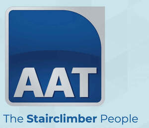

Trade Mark Journal No.2025/048 28 November 2025
UK00004286963 30 October 2025 (7,9,10,12,20,28,35,41,44)

- Class 7
- Lifting installations and platforms for the transport of persons and goods; Machine tools and tools for machines; Stair climbing machines; Stair lifts; Transportation machines; parts and fittings of the aforesaid goods in this class.
- Class 9
- Downloadable educational course materials; Downloadable educational media; Downloadable or recorded e-books, publications, videos, guides, manuals, templates, checklists, and training materials; Training guides in electronic format; Evacuation chairs; Life-saving apparatus and instruments. .
- Class 10
- Apparatus for medical rehabilitation; Assistive devices adapted for medical purposes, orthopaedic purposes, or for persons with disabilities; Beds, chairs, cushions and mattresses, all especially made for medical purposes, orthopaedic purposes, or for persons with disabilities; Chair lift transporters for persons with disabilities; Compresses and braces for supporting the body; Disability hoists; Disability lifts; Disability walkers; Furniture especially made for medical purposes, orthopaedic purposes, or for persons with disabilities; Medical apparatus and devices; Medical supports for the body; Mobility aids; Orthopaedic apparatus; Physical exercise machines adapted for medical purposes, orthopaedic purposes, or for persons with disabilities; Physical therapy equipment; Physiotherapy and rehabilitation equipment; Stair climbers adapted for medical purposes, orthopaedic purposes, or for persons with disabilities; Stair climbing machines for medical purposes, orthopaedic purposes, or for persons with disabilities; Wheeled walkers to aid mobility; Wheeled trolleys adapted for use as walking aids; parts and fittings of the aforesaid goods in this class.
- Class 12
- Braking aids, braking pads, and pads for wheelchairs and vehicles; Carriages for the disabled; Carts; Dollies being hand trucks; Hand trucks and carts; Trolleys; Vehicles; Vehicles adapted for the disabled; Vehicles for the physically handicapped and those of reduced mobility; Wheelchairs; Wheelchairs for the disabled; parts and fittings of the aforesaid goods in this class.
- Class 20
- Bean bags; Beds, bedding, mattresses, pillows and cushions; Chairs; Chairs adapted for use by those with mobility difficulties; Containers, not of metal, for storage or transport; Furniture, furniture parts and furnishings; Portable back supports for use with chairs; parts and fittings of the aforesaid goods in this class.
- Class 28
- Apparatus for use in outdoor sporting and exercise activities; Apparatus for body rehabilitation, body building or strength training; Apparatus for use in sports, fitness and exercise; Bathing floats; Body rehabilitation apparatus; Developmental toys; Exercise bars, benches, bikes, balls, pulleys, steppers, trampolines, treadmills, platforms and weights; Games and game apparatus; Manually operated exercise equipment; Playthings and toys; Sporting apparatus, articles and equipment; parts and fittings of the aforesaid goods in this class.
- Class 35
- Administrative services for medical referrals; Business intermediary, networking and referral services; Display services for merchandise; Merchandising; Organisation of events, exhibitions, fairs and shows for commercial, promotional, networking and advertising purposes; Provision of online marketplaces for connecting patients with healthcare providers or professional caregivers; Provision of an online marketplace for buyers and sellers of goods and services; Retail and wholesale services in relation to machine tools, transportation equipment and apparatus, life-saving apparatus and instruments, bathroom installations, rehabilitation apparatus, medical apparatus and devices, orthopaedic apparatus, body supports, physical therapy equipment, assistive devices adapted for persons with disabilities, mobility aids, furniture, furniture specifically adapted for the disabled or for medical and orthopaedic purposes, carriages and carts, dollies, hand trucks, trolleys, vehicles, wheelchairs, exercise equipment, and sporting equipment; Sales promotion services; information, consultancy and advice in relation to the foregoing.
- Class 41
- Arranging, conducting, managing, organising, planning, producing and providing coaching, recreational, leisure, and educational events, classes and activities; Arranging, conducting, managing, organising, hiring, planning, producing and providing facilities, equipment, and studios in relation to education, fitness and exercise; Coaching; Creation and production of educational, coaching, recreational, and leisure content for podcasts, videos and films; Education and training services; Electronic publication; Electronic publication in relation to disability and mobility aids; Exercise and fitness classes; Health and wellness training; Leisure and recreational services; Personal trainer services; Physical fitness instruction; Providing leisure and recreation facilities; Providing on-line non-downloadable audio and video content; Provision of training courses; Provision, hire and rental of coaching, recreational, leisure and educational facilities and equipment; Publication of multimedia material online; Publication of educational information; Publishing; Sports and fitness services; Teaching; information, consultancy and advice in relation to the foregoing.
- Class 44
- Health and medical advice and information services; Health care and medical assistance; Health care and medical services; Occupational therapy and rehabilitation; Provision of exercise facilities and equipment for health rehabilitation purposes; Rental and hiring of medical, orthopaedic and health care equipment, aids, apparatus, devices and instruments; Therapy services; information, consultancy and advice in relation to the foregoing.
AAT (GB) LIMITED
Representative: LEGALVISION LAW UK LTD